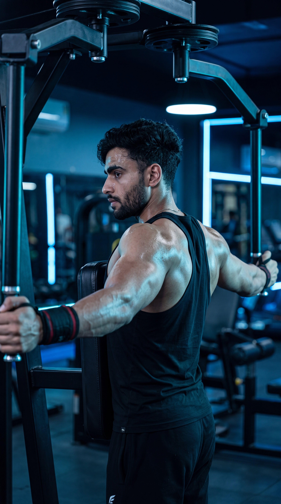

Primary Muscle
Rear Deltoids
Build Stronger Rear Delts, Improve Posture & Create Balanced Shoulder Development
The Reverse Pec Deck Fly is an isolation shoulder exercise that primarily targets the rear deltoids while also engaging the rhomboids, middle trapezius, and rotator cuff muscles. Performed on a pec deck machine in a reverse position, it provides a stable movement pattern that helps strengthen the posterior shoulders, improve posture, enhance upper back development, and create balanced, well-rounded shoulder aesthetics.

Rear Deltoids
Pec Deck Machine
Beginner
Isolation
Discover which muscles are primarily responsible for the Reverse Pec Deck Fly and which supporting muscles help stabilize the shoulder blades, control the movement, and improve upper back strength and posture during every repetition.
Posterior Shoulders
Upper Back
Upper Back
Shoulder Stabilizers
Discover how the Reverse Pec Deck Fly strengthens the rear shoulders, improves posture, enhances upper back development, and creates balanced shoulder aesthetics through controlled machine-based resistance.
Directly targets the posterior deltoids to improve shoulder thickness, strength, and overall upper-body balance.
Strengthening the rear deltoids, rhomboids, and middle trapezius helps counter rounded shoulders and promotes a healthier upright posture.
Engages important upper back muscles that contribute to better shoulder stability, pulling strength, and overall muscular symmetry.
The pec deck machine guides the movement, allowing you to isolate the rear deltoids with excellent control and minimal momentum.
The controlled movement pattern makes it easier to focus on contracting the rear deltoids, leading to more effective shoulder training.
Developing the often-neglected rear deltoids improves shoulder symmetry, enhances overall physique aesthetics, and supports healthier shoulder function.
Follow these step-by-step instructions to perform the Reverse Pec Deck Fly with proper posture, controlled movement, and full rear deltoid activation to build stronger shoulders, improve posture, and develop a balanced upper back.
Adjust the seat so the handles are roughly level with your shoulders. Sit facing the pec deck pad with your chest firmly against it and grasp the handles using a neutral or overhand grip.
Set the seat height correctly before starting to keep the movement aligned with your rear deltoids.
Tighten your core, keep your chest firmly against the pad, and maintain a neutral spine. Slightly bend your elbows and avoid rounding your shoulders.
Keep your torso completely still so the rear shoulders perform all the work.
Move the handles outward and backward in a smooth arc until your arms are in line with your shoulders. Focus on driving the motion with your elbows instead of your hands.
Think about spreading your arms apart rather than pulling with your hands.
Pause briefly at the end of the movement while squeezing your rear deltoids and shoulder blades together. Avoid shrugging your shoulders toward your ears.
Hold the contraction for one second to maximize rear delt activation.
Slowly return the handles to the starting position under full control without allowing the weight stack to slam. Repeat for the desired number of repetitions while maintaining consistent form.
Control the lowering phase just as carefully as the lifting phase to maximize muscle growth and shoulder stability.
Avoid these common technique mistakes to maximize rear deltoid activation, improve upper back development, and perform the Reverse Pec Deck Fly safely and effectively.
Excessive weight often causes momentum, reduces rear deltoid activation, and shifts the workload to the upper traps and lower back.
Select a lighter weight that allows you to perform every repetition with smooth, controlled movement and full range of motion.
Elevating your shoulders during the movement increases upper trapezius involvement and reduces emphasis on the rear deltoids.
Keep your shoulders down and relaxed while focusing on moving through the rear deltoids rather than lifting with the traps.
Excessive elbow flexion turns the exercise into more of a rowing movement, reducing isolation of the rear deltoids.
Maintain a slight, consistent bend in your elbows throughout the movement without pulling the handles toward your body.
Performing the exercise too quickly reduces muscle tension, limits rear delt engagement, and decreases overall training effectiveness.
Lift the handles with control, pause briefly at peak contraction, and lower the weight slowly to maximize muscle activation.
Apply these practical coaching cues to improve your Reverse Pec Deck Fly technique, maximize rear deltoid activation, strengthen your upper back, and perform every repetition with excellent control and precision.
Begin each repetition by driving your elbows backward instead of pulling with your hands. This keeps the emphasis on the rear deltoids rather than the arms.
Imagine pushing your elbows apart while your hands simply follow the movement.
Maintain full contact between your chest and the support pad throughout the exercise to eliminate body momentum and isolate the target muscles.
If your chest lifts off the pad, reduce the weight and regain control of the movement.
Pause briefly when your arms reach shoulder level and consciously contract your rear deltoids before lowering the weight.
A one-second squeeze at the top often produces better muscle activation than simply moving heavier weights.
Lower the handles slowly instead of allowing the weight to pull your arms forward. A controlled eccentric phase increases muscle tension and promotes greater rear shoulder development.
Treat the lowering phase as importantly as the lifting phase to maximize strength and muscle growth.
Progress from mastering proper Reverse Pec Deck Fly mechanics to building stronger rear deltoids, improving shoulder stability, and advancing to more challenging rear shoulder exercises for balanced upper-body development.
Begin with a light weight to learn the correct seat height, chest position, elbow path, and movement pattern before increasing resistance.
Proper machine setup, strict form, full range of motion, and controlled rear deltoid activation.
Perform controlled repetitions while keeping your chest against the pad and maintaining smooth movement without using momentum.
Rear delt isolation, shoulder blade control, consistent tempo, and a strong mind-muscle connection.
Gradually increase the weight while maintaining strict technique, a full range of motion, and complete control during both the lifting and lowering phases.
Progressive overload, controlled eccentric movement, rear shoulder hypertrophy, and consistent exercise execution.
Once you've mastered the Reverse Pec Deck Fly, progress to exercises such as Face Pulls, Bent-Over Rear Delt Raises, Incline Rear Delt Flyes, or Single-Arm Cable Rear Delt Flyes to further improve shoulder strength and muscular balance.
Advanced rear delt development, shoulder stability, muscular symmetry, progressive overload, and long-term upper back strength.
Find clear answers to common questions about the Reverse Pec Deck Fly, including proper technique, muscles worked, machine setup, training frequency, and progression for stronger rear shoulders.
The Reverse Pec Deck Fly primarily targets the rear deltoids while also engaging the rhomboids, middle trapezius, and rotator cuff muscles. These muscles work together to improve shoulder stability, posture, and upper back strength.
Both exercises are highly effective. The Reverse Pec Deck Fly provides greater stability and makes it easier to isolate the rear deltoids, while dumbbell rear delt flyes require more balance and stabilization. Including both can promote well-rounded shoulder development.
Yes. Keeping your chest firmly against the pad minimizes body momentum, improves stability, and helps isolate the rear deltoids throughout the movement.
Yes. Beginners should start with a light weight, learn proper machine setup, and focus on slow, controlled repetitions before gradually increasing resistance.
Most people benefit from performing the Reverse Pec Deck Fly one to three times per week as part of a balanced shoulder or upper-body training program while allowing adequate recovery between sessions.
For most training goals, performing 2–4 working sets of 10–15 controlled repetitions is an effective approach. Focus on strict technique, a full range of motion, and squeezing the rear deltoids on every repetition rather than simply lifting heavier weights.
Explore other shoulder exercises that complement the Reverse Pec Deck Fly and help you strengthen the rear deltoids, improve shoulder stability, enhance posture, and build complete shoulder development.


Continue building stronger, more balanced shoulders with step-by-step exercise guides covering proper technique, muscles worked, common mistakes, expert coaching tips, and progressive training strategies.